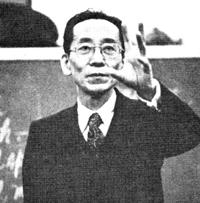
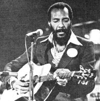
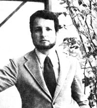
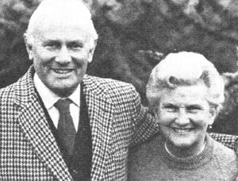
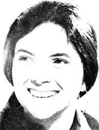

Michio Kushi, Mr. Kushi and the East West Foundation hosted the second annual Medical Conference on a Nutritional Approach to Cancer and Other Illnesses. He has written two new books, The Macrobiotic Way of Healing and The Book of Do-In; John Seymour, He had demonstrated that an agricultural field can be productive without chemical inputs. He wrote a book called The Guide to Self-Sufficiency; Richie Havens, singing to protect the seas, the whales in particular and has helped a friend, Michael Sandlofer, establish the North Wind Museum in Nyack, New York; Jerry Lewis, raising money through the conservation of resources; Albert Szent-Gyorgyi, he dicovered vitamin C and is the active Scientific Director of the National Foundation for Cancer Research (NFCR); Peter and Eileen Caddy, they founded the Findhorn Community in Northern Scotland. They spend their time now visiting other alternative communities to share experiences; Keith Haggard, he is the founder of Sun Mountain Designs, an alliance of architects and engineers that demonstrated that passive solar systems work well. The New Mexico Solar Energy Association (NMSEA) is the primary way of spreading the word about solar energy; Barbara D. Blum, she is getting involved in Integrated Pets Management (IPM) projects. IPM uses natural biological controls for pest management.
Michio Kushi is on the road . . . again. This renowned Japanese-born author, as you may know, has lectured throughout the world on Oriental culture, philosophy, medicine, and diet . .. conducted seminars and live-in study programs for both the general public and the medical profession ... compiled much of his lecture/seminar material in The Teachings of Michio Kushi (an introduction to the cosmology of yin and yang as applied to diet, medicine, psychology, natural science, and history) . . . and established the non-profit East West Foundation for One Peaceful World. And his schedule is just as hectic now as ever.
Last summer (August 1978) in Amherst, Massachusetts Mr. Kushi and the Foundation hosted the second annual Medical Conference on a Nutritional Approach to Cancer and Other Illnesses. Then this nonstop educator-having seen two new books off to the printer-set out for Europe once more, this time to participate in the First European Congress of Macrobiotics, which will be held in Belgium in early November.
Mr. Kushi's two new books-The Macrobiotic Way of Healing and The Book of Do-In-by the way, are already on the market. To order any books by Michio Kushi or to inquire about study programs, write The East West Foundation, 359 Boylston Street, Boston, Massachusetts 02118.-PF.
Studies show that agribiz requires five calories of chemical energy-in the form of petrochemical fertilizers and spraysto produce ore calorie of energy in the form of wheat. But John Seymour ("the guru of British selfsufficiency") has demonstrated in just two years that 62 acres of land mostly reclaimed from swamp and bracken-can feed the 10 or more people who work the place, maintain a whole catalog of farm animals, and produce a surplus for swap or sale . . . without nonorganic chemicals. At Fachongle Isaf, in Wales (the farm all the do-it-yourselfers in England are clamoring to see), animals are pastured where their manure is needed for fertilizer, then moved on. Both crops and pasturage are rotated in accordance with the needs of the soil ... and the whims of the weather.
John's beliefs and techniques are spelled out in his big book, The Guide to Self-Sufficiency (published in the U.S. by Hearst Books and available in bookstores or for $11.95 plus 956 postage and handling from Mother's Bookshelf). "The concept of the conquest of Nature is a false concept and the attempt to do it is doomed to fail," reads the Seymour philosophy: As a part of Nature himself, Man must work with-not against-the natural forces of the earth. At Fachongle Isaf, John Seymour is perfecting what he preaches.-PF.
Richie Havens, prominent singing star of the near-legendary Woodstock Festival in 1969, is still singing for peace . . . with "Shalom, Salaam", a contribution to Israeli-Arab negotiations.
And as soon as we have no immediate "wars to shout about," says the 1980's activist, "we can turn our attention completely to the environment." Richie--in fact-has already chosen to shout for the sea in general, and whales in particular. In addition to doing benefit performances on behalf of the big mammals, the singer has devoted considerable time to helping his friend Michael Sandlofer-professional diver, environmentalist, and lecturer-establish the North Wind Museum in Nyack, New York: a marine exhibit calculated to awaken both children and adults to the wonders of the undersea world and our obligation to protect it.
Richie and Michael also have assembled a program that has outgrown its museum home and taken to the road. "The Right to Live", a historical perspective on whaling from primitive hunts to the deadly modern floating factories that have brought Moby Dick to the brink of disaster, has traveled widely-from Tokyo to the United Nations-and this year, Havens and Sandlofer have been touring colleges and fairs with the presentation. Everywhere they go, Richie Havens' songs and environmentally oriented chatter are an integral part of what the Sierra Club has called "a vital service both for the whale and for mankind". -PF.
JERRY LEWIS
he annual Jerry Lewis Muscular Dystrophy Telethon pulled off a successful double play this year: It seems that-while beating the bushes for cash (to aid victims of the crippling disease, as well as finance research into prevention and cure)-the comedian is also beating the drums for conservation of resources.
Here's how: Four years ago, Jerry and Reynolds Metals agreed that the company would donate to the MD fund one penny per pound for all the aluminum (cans, foil, etc.) that was brought to the Reynolds Recycling Collection Centers from August 1 through Labor Day each year. So Jerry-in pretelethon publicity-now shows his fans how to get four birds with one stone: They can [1] help the muscular dystrophy cause while they [2] clean up litter, [3] recycle valuable metal, and [4] get paid (at Reynolds' regular scrap aluminum rates) themselves. (That's some kind of efficiency of motion, Jer! )
And the result? At last count (with figures still coming in), this year's August drive had already brought in more than 25 million pounds of "waste" metal . . for a donation to "Jerry's kids" (as he calls them) of over a quarter of a million dollars. -PF.
Dr. Albert Szent-Gyorgyi, 1937 Nobel Prize recipient for his discovery of vitamin C, is the honoree this year at the CIBA (Chemical Industry in Basle) Foundation's symposium (which is held annually to celebrate the work of a prominent scientist). As well he should be honored. Because Dr. Szent-Gyorgyi is today-at 86-the very active Scientific Director of the National Foundation for Cancer Research, a worldwide consortium of university and hospital laboratories, each working on some aspect of their common quest: the cause and prevention of cancer.
The Hungarian-born scientist calls the NFCR a "laboratory without walls". Because the research members of the Foundation are already employed, and their labs are already established, the NFCR's funds (which are donations-not tax-money grants-from some 350,000 contributing members) are not spent on salaries and buildings but go directly to finance the materials and equipment needed for the research itself. Their collaborative studies, the researchers hope, will teach them enough about the mechanisms of the living cell so that they can comprehend-and then preventthe abnormal cellular activity which is known as cancer. Discovering the cause comes first: Looking for a cure without fully understanding the problem, Dr. SzentGyorgyi maintains, is like "trying to fix your car without opening the hood".
The doctor's own investigations in bioelectronics (the movement of electrons within living tissue) indicate that vitamin C plays a significant role in building cells, holding them together, and regulating healthy (as opposed to runaway, or cancerous) cellular activity . . . but there is much yet to learn about how the process works. Dr. SzentGyorgyi puts in a full day at these studies in his own Woods Hole, Massachusetts laboratory (and "relaxes" after hours with a five-mile swim) . . . that is, when he's not junketing around the world to confer with his NFCR colleagues. -PF.
PETER AND EILEEN CADDY
I suppose we're best known for 40pound cabbages and beautiful flowers," says Peter Caddy, "but we've moved on . . . we now grow people here as well as plants."
Peter and his wife Eileen are the founders of the Findhorn Community in northern Scotland, where their success in producing botanical wonders in nearly pure sand soon brought them fame and streams of visitors. Soon, too, the community's residents were flourishing as wondrously as the gardens. Today some 260 people of all ages live at Findhorn. Although they come from 20 countries and profess varying creeds, they've learned to cooperate not only with nature but with each other in 24 communal departments ... including kitchens, gardens, press and bindery, building construction and remodeling, and craft studios.
Now the Findhorn brand of harmonious endeavor (they like the word "synergy") is spreading. Peter and Eileen spend half their time visiting other alternative communities to share experiences in a process they call "linking". And Findhorn has begun to host "Unearth: Toward a Planetary Culture": an annual conference to investigate new lines of wholistic thinking.
For more information about the conference or other activities, send a dollar or two to Findhorn Foundation, The Park, Forres IV36 OTZ, Scotland. Guests discover that Findhorn is not just a place to go but a place to grow. - Selena Fox.
KEITH HAGGARD
Keith Haggard first moved to the sunny side of the energy street as one of the founding members of Sun Mountain Designs ... a pioneer, pre-energy-crunch alliance of architects and engineers who demonstrated that passive solar systems do work well-and inexpensively-in New Mexico homes. Subsequently, Keith and some companion "graduates" of SMD put their hard-won expertise together with the concern of a few other folks to form the New Mexico Solar Energy Association.
Largely through Keith Haggard's persistence, this non-profit prototype for solar energy associations everywhere has grown from an unpaid posse of volunteers working out of the Haggard home to an aggregation of 1,700 duespaying members in 40 states and 10 foreign countries . . . with many irons in the solar fire. For example, Keith directs the organization's own Walk-In Resource Center in Santa Fe, a reference library and bookstore staffed by knowledgeable people who'll answer the visitor's questions. Then, a trial project to design and oversee on-site construction of solar greenhouses has produced more than a dozen installations in the community and on a nearby Navajo reservation. And, the NMSEA Bulletin has become a prime means of spreading the word all over the nation about ways to utilize Ol' Sol's generosity.
Of course, all these undertakings require money, and the Association's total funding-dues and donations, plus government grants-is now approaching ;250,000 annually. But Keith (who has only been on the payroll for two years himself) feels that the work still freely volunteered by amateurs at least equals in value the organization's revenue from all other sources.
Other sun lovers laboring to form similar fact-finding and -sharing groups, then, can take heart from the knowledge that concern and time-rather than money-are of primary importance in generating results. They can also take strength from the fact that solar energy pioneer Keith Haggard-from his NMSEA base in Santa Fe, New Mexicosays that he's always delighted to "lend a hand" to anyone who's really serious about developing the use of the sun anywhere in the country . . . or the world.Ruth H. Pritchard. BARBARA D. BLUM t's a good thing we've got Barbara Blum, conservationist and Kansas farmer, as Deputy Administrator of the Environmental Protection Agency. Mrs. Blum wants to harmonize the work of growers and environmentalists to serve both. increased food production and the needs of the environment.
Barbara finds those needs increasingly urgent, given the documented ability of insect species to develop resistance to the very poisons designed to eliminate them and-worsethe admitted toxic and carcinogenic hazards that farm chemicals present to human life.
That's why Mrs. Blum is excited about the prospects for Integrated Peat Management (see pages 50-51 of MOTHER NO. 52). Emphasizing as it does the use of natural biological controls (letting the "good" bugs and birds and plants discourage the pesky ones), IPM offers an alternative to chemical pesticides in the struggle to achieve "an environmentally protective approach to meeting our needs for food and fiber". California IPM projects, Barbara points out, have shown that it's possible to reduce pesticide use by at least 80% "with no appreciable impact on yield, on quality, or on profit". Yet these known techniques are being applied on only 1% of productive U.S. acreage.
The EPA must push, insists Barbara Blum, both to speed up IPM research as well as to demonstrate the economic feasibility of such practices so that farmers will gladly add them to what she calls their "battery of tools for crop production. "-PF.
|
PHOTO SUPPLIED BY THE EAST WEST FOUNDATION |
 PHOTO SUPPLIED BY STORMY FOREST PRODUCTIONS |
 PHOTO SUPPLIED BY THE FINDHO.N FOUNDATION |
|
 PHOTO SUPPLIED BY THE ENVIRONMENTAL PROTECTION AGENCY |
 |
 |